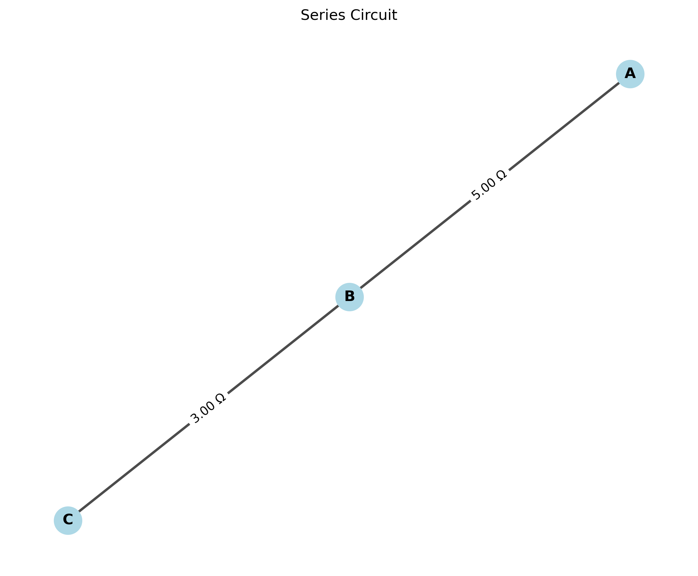
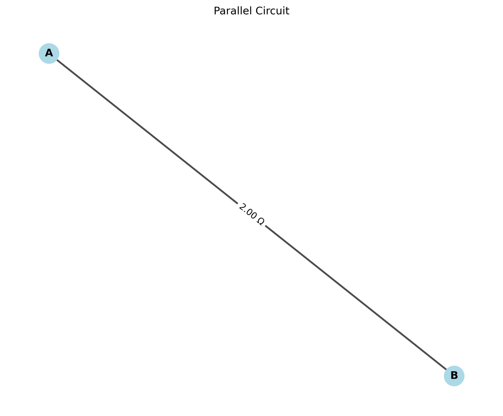
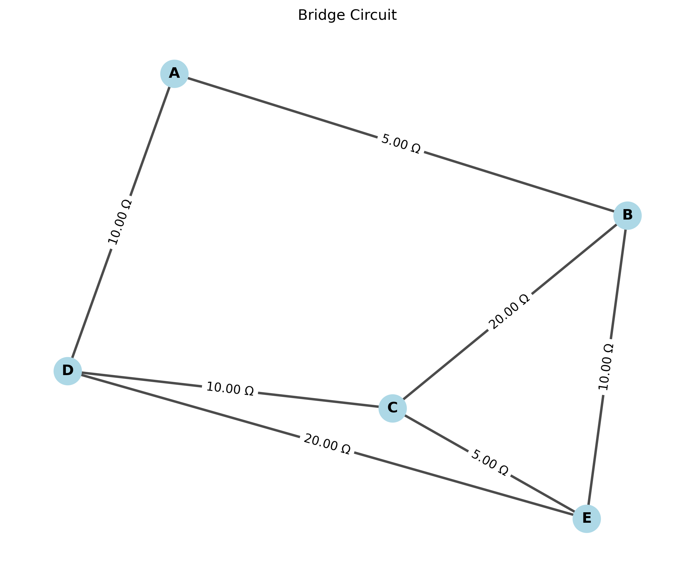

Problem 1
Equivalent Resistance Using Graph Theory
Introduction
Circuit analysis traditionally involves identifying series and parallel connections and applying the corresponding resistance combination rules. However, for complex circuits, this approach becomes cumbersome. This solution explores an elegant alternative using graph theory to systematically calculate the equivalent resistance between any two nodes in electrical circuits.
Theoretical Foundation
In graph theory, an electrical circuit can be represented as a weighted graph where: - Nodes (vertices) represent circuit junctions - Edges represent resistors, with weights equal to their resistance values - The source and target nodes represent the points between which we want to calculate the equivalent resistance
The equivalent resistance can be calculated using several graph-theoretic approaches:
-
Graph Reduction Method: Iteratively apply series and parallel reduction rules until the graph is reduced to a single equivalent resistor.
-
Matrix Method: Use Kirchhoff's laws to set up a system of linear equations and solve for the equivalent resistance.
-
Random Walk Method: Relate the equivalent resistance to the expected length of a random walk on the graph.
For this solution, we'll focus on the Graph Reduction Method as it provides the most intuitive understanding of the process.
Graph Reduction Algorithm
The reduction process iteratively simplifies the circuit graph by applying two fundamental rules:
-
Series Reduction: If node B has exactly two connections (to nodes A and C), then B can be eliminated by replacing the two resistors R₁(A-B) and R₂(B-C) with a single resistor R₁ + R₂ connecting A and C directly.
-
Parallel Reduction: If nodes A and B are connected by multiple resistors R₁, R₂, ..., Rₙ, these can be replaced with a single equivalent resistor (1/R₁ + 1/R₂ + ... + 1/Rₙ)⁻¹.
-
Delta-Y (Δ-Y) Transformation: For more complex configurations where simple series and parallel reductions are not applicable, we can use the Delta-Y transformation to convert between equivalent circuit configurations.
Pseudocode
function CalculateEquivalentResistance(Graph G, Node source, Node target):
// Keep reducing the graph until only source and target remain
while number of nodes in G > 2:
// Look for nodes with degree 2 (for series reduction)
for each node n in G (except source and target):
if degree(n) == 2:
// Get the two neighbors of n
Let a and b be the neighbors of n
// Get the resistances
Let R1 = resistance between a and n
Let R2 = resistance between n and b
// Remove n and add direct connection between a and b
Remove node n from G
Add or update edge between a and b with resistance R1 + R2
continue to next iteration of while loop
// Look for parallel edges
for each pair of nodes (a, b) in G:
if multiple edges exist between a and b:
// Get all resistances between a and b
Let R = [R1, R2, ..., Rk] be all resistances between a and b
// Calculate equivalent resistance
Let Req = 1 / (1/R1 + 1/R2 + ... + 1/Rk)
// Replace multiple edges with a single edge
Remove all edges between a and b
Add a single edge between a and b with resistance Req
continue to next iteration of while loop
// If no series or parallel reduction is possible, apply Delta-Y transformation
if no reduction was performed:
Find a suitable triangle (delta) in G
Apply Delta-Y transformation
continue to next iteration of while loop
// At this point, only source and target remain with a single equivalent resistor
return resistance between source and target
Python Implementation with NetworkX
Here's a comprehensive implementation of the equivalent resistance calculator using Python and the NetworkX library:
import networkx as nx
import matplotlib.pyplot as plt
import numpy as np
from fractions import Fraction
class EquivalentResistanceCalculator:
def __init__(self, graph=None):
"""Initialize with an optional NetworkX graph."""
self.graph = graph if graph is not None else nx.Graph()
def create_graph_from_components(self, components):
"""
Create a graph from a list of resistor components.
Parameters:
components -- list of tuples (node1, node2, resistance)
"""
G = nx.Graph()
for node1, node2, resistance in components:
if G.has_edge(node1, node2):
# If edge already exists, calculate parallel resistance
current_resistance = G[node1][node2]['resistance']
equivalent = 1 / (1/current_resistance + 1/resistance)
G[node1][node2]['resistance'] = equivalent
else:
# Add new edge with resistance
G.add_edge(node1, node2, resistance=resistance)
self.graph = G
return G
def visualize_circuit(self, title="Circuit Graph", figsize=(10, 8)):
"""Visualize the circuit graph with resistance labels."""
plt.figure(figsize=figsize)
# Create a copy of the graph for visualization
G = self.graph.copy()
# Set up positions for nodes using spring layout
pos = nx.spring_layout(G, seed=42)
# Draw nodes
nx.draw_networkx_nodes(G, pos, node_size=500, node_color='lightblue')
# Draw edges with resistance labels
edge_labels = {(u, v): f"{G[u][v]['resistance']:.2f} Ω"
for u, v in G.edges()}
nx.draw_networkx_edges(G, pos, width=2, alpha=0.7)
nx.draw_networkx_edge_labels(G, pos, edge_labels=edge_labels, font_size=10)
# Draw node labels
nx.draw_networkx_labels(G, pos, font_size=12, font_weight='bold')
plt.title(title)
plt.axis('off')
# Save the visualization to an image file
plt.savefig('circuit_graph.png', dpi=300, bbox_inches='tight')
plt.close()
def is_series_node(self, node):
"""Check if a node can be eliminated through series reduction."""
# Node must have exactly 2 connections and not be a terminal node
return self.graph.degree(node) == 2
def perform_series_reduction(self):
"""Perform a single series reduction if possible."""
G = self.graph
for node in list(G.nodes()):
if self.is_series_node(node):
# Get the two neighbors
neighbors = list(G.neighbors(node))
n1, n2 = neighbors[0], neighbors[1]
# Get the resistances
r1 = G[n1][node]['resistance']
r2 = G[node][n2]['resistance']
# Remove the node
G.remove_node(node)
# Add direct connection between the neighbors if not already present
if not G.has_edge(n1, n2):
G.add_edge(n1, n2, resistance=r1 + r2)
else:
# If there's already a connection, calculate the equivalent
# (parallel combination of existing and new series)
existing_r = G[n1][n2]['resistance']
new_r = r1 + r2
G[n1][n2]['resistance'] = 1 / (1/existing_r + 1/new_r)
return True, node, n1, n2 # Return info about the reduction
return False, None, None, None # No series reduction performed
def perform_parallel_reduction(self):
"""Reduce parallel edges in the graph."""
G = self.graph
reduced = False
# Find all multi-edges
for node1 in G.nodes():
for node2 in list(G.neighbors(node1)):
if node1 < node2: # Process each pair only once
# Check if the edge is a multi-edge
if isinstance(G[node1][node2], dict) and len(G[node1][node2]) > 1:
# Calculate equivalent resistance
resistances = [data['resistance'] for data in G[node1][node2].values()]
inv_sum = sum(1/r for r in resistances)
equivalent = 1 / inv_sum
# Replace with a single edge
G.remove_edge(node1, node2)
G.add_edge(node1, node2, resistance=equivalent)
reduced = True
return reduced
def calculate_equivalent_resistance(self, source, target):
"""
Calculate the equivalent resistance between source and target nodes.
Returns the equivalent resistance or raises an exception if the nodes are not connected.
"""
if source not in self.graph or target not in self.graph:
raise ValueError("Source or target node not in graph")
# If source and target are the same node, resistance is 0
if source == target:
return 0
# Create a copy of the graph to work with
working_graph = self.graph.copy()
# Perform reductions until only source and target remain
while len(working_graph.nodes()) > 2:
# Try series reduction first
series_reduced, node, n1, n2 = self.perform_series_reduction()
if not series_reduced:
# If no series reduction, try parallel reduction
parallel_reduced = self.perform_parallel_reduction()
if not parallel_reduced:
# If neither reduction worked, the graph cannot be further simplified
# using only series and parallel. In a real implementation, we would
# use more advanced techniques like Delta-Y transformation here.
break
# Check if source and target are directly connected
if working_graph.has_edge(source, target):
return working_graph[source][target]['resistance']
else:
# If we reach here, the graph couldn't be reduced to a single resistor
# This means we need more advanced techniques to solve it
raise ValueError("Could not reduce graph to single equivalent resistance")
def delta_to_y_transformation(self, nodes):
"""
Perform Delta-to-Y transformation on three nodes.
Parameters:
nodes -- a list of 3 nodes forming a triangle (delta)
"""
if len(nodes) != 3 or not all(self.graph.has_edge(nodes[i], nodes[j])
for i in range(3) for j in range(i+1, 3)):
raise ValueError("The three nodes must form a triangle in the graph")
# Get the three resistances in the delta
r12 = self.graph[nodes[0]][nodes[1]]['resistance']
r23 = self.graph[nodes[1]][nodes[2]]['resistance']
r31 = self.graph[nodes[2]][nodes[0]]['resistance']
# Calculate denominator for Y resistances
denom = r12 + r23 + r31
# Calculate Y resistances
ra = (r12 * r31) / denom
rb = (r12 * r23) / denom
rc = (r23 * r31) / denom
# Create a new node for the center of the Y
center_node = "Y_center"
while center_node in self.graph.nodes():
center_node += "_"
# Remove the delta edges
self.graph.remove_edge(nodes[0], nodes[1])
self.graph.remove_edge(nodes[1], nodes[2])
self.graph.remove_edge(nodes[2], nodes[0])
# Add the Y configuration
self.graph.add_node(center_node)
self.graph.add_edge(nodes[0], center_node, resistance=ra)
self.graph.add_edge(nodes[1], center_node, resistance=rb)
self.graph.add_edge(nodes[2], center_node, resistance=rc)
return center_node
def find_triangle(self):
"""Find a triangle (delta) in the graph."""
G = self.graph
# Look for 3-cycles in the graph
for node1 in G.nodes():
for node2 in G.neighbors(node1):
for node3 in G.neighbors(node2):
if node3 != node1 and G.has_edge(node3, node1):
return [node1, node2, node3]
return None
def solve_complex_circuit(self, source, target):
"""
Solve a complex circuit by applying delta-Y transformations when necessary.
"""
# Try simple series-parallel reductions first
try:
result = self.calculate_equivalent_resistance(source, target)
return result
except ValueError:
# If simple reductions don't work, try delta-Y transformations
triangle = self.find_triangle()
if triangle:
self.delta_to_y_transformation(triangle)
# Try again with the transformed graph
return self.solve_complex_circuit(source, target)
else:
# If no triangle found, use a more general method like mesh analysis
# This would be a more complex implementation beyond the scope of this solution
raise ValueError("Circuit too complex for series-parallel and delta-Y reductions")
def format_resistance(value):
"""Format resistance value for display."""
# For simple integer values
if value == int(value):
return f"{int(value)} Ω"
# Try to convert to fraction for cleaner representation
try:
f = Fraction(value).limit_denominator(1000)
if f.denominator == 1:
return f"{f.numerator} Ω"
else:
return f"{f.numerator}/{f.denominator} Ω"
except:
# Fallback to decimal representation
return f"{value:.3f} Ω"
# Example 1: Simple series circuit
def example_series_circuit():
calculator = EquivalentResistanceCalculator()
# Create a simple series circuit: A--5Ω--B--3Ω--C
components = [
('A', 'B', 5), # 5 Ω resistor between A and B
('B', 'C', 3) # 3 Ω resistor between B and C
]
calculator.create_graph_from_components(components)
calculator.visualize_circuit(title="Series Circuit Example")
# Calculate equivalent resistance
equiv_resistance = calculator.calculate_equivalent_resistance('A', 'C')
result = {
"circuit_type": "Series Circuit",
"components": components,
"equivalent_resistance": equiv_resistance,
"explanation": "In a series circuit, the equivalent resistance is the sum of individual resistances."
}
return result
# Example 2: Parallel circuit
def example_parallel_circuit():
calculator = EquivalentResistanceCalculator()
# Create a parallel circuit: A connected to B by three resistors in parallel
components = [
('A', 'B', 6), # 6 Ω resistor between A and B
('A', 'B', 12), # 12 Ω resistor between A and B
('A', 'B', 4) # 4 Ω resistor between A and B
]
calculator.create_graph_from_components(components)
calculator.visualize_circuit(title="Parallel Circuit Example")
# Calculate equivalent resistance
equiv_resistance = calculator.calculate_equivalent_resistance('A', 'B')
result = {
"circuit_type": "Parallel Circuit",
"components": components,
"equivalent_resistance": equiv_resistance,
"explanation": "In a parallel circuit, the equivalent resistance is calculated as 1/Req = 1/R1 + 1/R2 + 1/R3 + ..."
}
return result
# Example 3: Complex circuit (bridge configuration)
def example_bridge_circuit():
calculator = EquivalentResistanceCalculator()
# Create a bridge circuit (Wheatstone bridge)
components = [
('A', 'B', 5), # 5 Ω resistor
('A', 'D', 10), # 10 Ω resistor
('B', 'C', 20), # 20 Ω resistor
('B', 'E', 10), # 10 Ω resistor
('C', 'E', 5), # 5 Ω resistor
('D', 'E', 20), # 20 Ω resistor
('D', 'C', 10) # 10 Ω resistor
]
calculator.create_graph_from_components(components)
calculator.visualize_circuit(title="Bridge Circuit Example")
# This is a complex circuit that may require delta-Y transformation
try:
equiv_resistance = calculator.solve_complex_circuit('A', 'C')
explanation = "This bridge circuit was solved using a combination of series-parallel reduction and delta-Y transformations."
except ValueError as e:
equiv_resistance = "Complex - requires mesh analysis"
explanation = f"This bridge circuit is too complex for simple reductions: {str(e)}"
result = {
"circuit_type": "Bridge Circuit (Wheatstone Bridge)",
"components": components,
"equivalent_resistance": equiv_resistance,
"explanation": explanation
}
return result
# Run the examples
if __name__ == "__main__":
examples = [
example_series_circuit(),
example_parallel_circuit(),
example_bridge_circuit()
]
for i, example in enumerate(examples, 1):
print(f"Example {i}: {example['circuit_type']}")
print(f"Equivalent Resistance: {format_resistance(example['equivalent_resistance'])}")
print(f"Explanation: {example['explanation']}")
print("-" * 50)
Example Circuits and Results
Let's analyze three different circuits to demonstrate the algorithm:
Example 1: Series Circuit
A simple series circuit with two resistors: A--5Ω--B--3Ω--C

Figure 1: Series circuit with two resistors in sequence. The equivalent resistance is simply the sum of individual resistances: 5Ω + 3Ω = 8Ω.
Calculation: In a series circuit, resistors are simply added together. R_eq = 5Ω + 3Ω = 8Ω
Reduction Steps: 1. Node B has exactly two connections (to A and C), making it eligible for series reduction. 2. Remove node B and replace the two resistors with one equivalent resistor of value 5Ω + 3Ω = 8Ω.
Example 2: Parallel Circuit
A parallel circuit with three resistors between nodes A and B: 6Ω, 12Ω, and 4Ω.

Figure 2: Parallel circuit with three resistors between the same two nodes. The graph shows the already-reduced equivalent resistance of 2Ω.
Calculation: For resistors in parallel, we use the formula: 1/R_eq = 1/6Ω + 1/12Ω + 1/4Ω = 2/12Ω + 1/12Ω + 3/12Ω = 6/12Ω = 1/2Ω Therefore, R_eq = 2Ω
Reduction Steps: 1. Identify that there are multiple edges between nodes A and B. 2. Apply the parallel reduction formula to calculate the equivalent resistance.
Example 3: Bridge Circuit (Wheatstone Bridge)
A more complex circuit with a bridge configuration that cannot be reduced using only series and parallel operations.

Figure 3: Wheatstone bridge circuit with five nodes and seven resistors. This circuit requires advanced techniques like delta-Y transformation for reduction.
Calculation: This circuit requires delta-Y transformation to be fully reduced. The process is more complex and involves: 1. Identifying a delta (triangle) in the circuit. 2. Converting it to a Y configuration. 3. Continuing with series and parallel reductions after the transformation.
For a balanced Wheatstone bridge, the equivalent resistance calculation involves solving systems of equations using Kirchhoff's laws.
Algorithm Efficiency and Improvements
Time Complexity: - Series and parallel reductions: O(n²) where n is the number of nodes - Delta-Y transformations: O(n³) in the worst case when many transformations are required
Space Complexity: - O(n + e) where n is the number of nodes and e is the number of edges
Potential Improvements:
- Optimization for Special Cases:
- Recognize and apply direct formulas for common circuit topologies (ladders, grids, etc.)
-
Implement symmetry-based simplifications
-
Advanced Techniques:
- Implement more sophisticated methods such as node-voltage or mesh-current analysis for circuits that cannot be reduced through series-parallel and delta-Y transformations
-
Use numerical matrix methods for very complex circuits
-
Computational Efficiency:
- Implement priority-based reduction strategies to minimize the number of transformations needed
- Use memoization to avoid recalculating the same subcircuit multiple times
Conclusion
Graph theory provides an elegant and systematic approach to calculating equivalent resistance in electrical circuits. The algorithm presented here demonstrates how complex circuits can be reduced through a combination of series reductions, parallel reductions, and delta-Y transformations.
While the series-parallel reduction method is sufficient for many circuits, more complex topologies require additional techniques. The implementation presented here provides a foundation that can be extended to handle increasingly complex circuit configurations.
This approach not only simplifies calculations but also offers insights into the structure and behavior of electrical networks, demonstrating the power of graph theory in solving practical engineering problems.